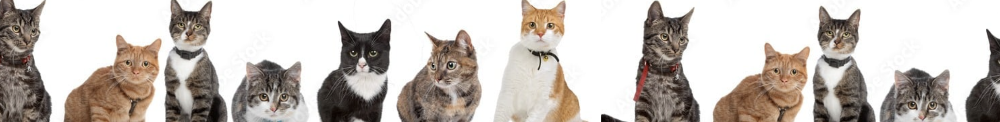

At Paws of Hope, we believe in the transformative power of compassion. Those who come to us - whether to foster, adopt, donate, volunteer, or simply care - become part of our mission to rescue and nurture cats, creating a community where every act of kindness saves lives.
PTE Cats Center of Pécs is a nonprofit organization established in 2024 with a heartfelt mission to provide sanctuary and care for feline friends in need. As a dedicated cat shelter, we are committed to nurturing and finding loving homes for our furry companions.
Much like a public hospital, our open-admission shelter, PTE Cats Center of Pécs, welcomes every cat in need, regardless of their condition. While we can't save them all, with the unwavering support of our community, we strive to rescue and rehabilitate every healthy and treatable cat entrusted to our care.
Our primary focus is on rescuing cats in distress, providing them with immediate medical attention, and nurturing them back to health in a safe and loving environment. Through our dedicated team of caregivers and volunteers, we ensure that each cat receives personalized care and attention tailored to their unique needs, preparing them for their journey to a forever home.
Our primary focus is on rescuing cats in distress, providing them with immediate medical attention, and nurturing them back to health in a safe and loving environment. Through our dedicated team of caregivers and volunteers, we ensure that each cat receives personalized care and attention tailored to their unique needs, preparing them for their journey to a forever home.
As part of our commitment to responsible pet ownership, we offer microchipping services to all cats in our care. Microchipping provides a permanent form of identification, ensuring that lost or stray cats can be quickly reunited with their families. By microchipping every cat before adoption, we provide peace of mind to both adopters and our feline friends, ensuring a lifetime of love and security.
Adopting a cat isn't just adding a pet to your home. It's welcoming a furry family member who fills your life with love and joy.
Dive into our heartwarming adoption tales and witness the transformative power of love and compassion.
CONTACT US!"I can't thank PTEcats enough for helping me find my perfect cat companion. From the moment I walked into their center, I felt welcomed and understood. The adoption process was simple, and the team took the time to ensure I was well-prepared for my new furry family member."
Erdemtugs Erdenetogtokh
"Adopting from PTEcats was the best decision I ever made! My new furry friend has brought so much happiness into my life. The process was smooth, and the staff were incredibly helpful and supportive. I highly recommend adopting from them!"
Vanessa Munson
"My experience with PTEcats was fantastic. They made the adoption process easy and stress-free. The staff were helpful and attentive, ensuring I found the perfect cat for my home. I'm grateful for their dedication to finding loving homes for cats."
Alper Baykara

"I am really grateful that I found my Alaka in PTE Cats. He has been great compnanion since then."
Dardari Alaa

"Hello, it's ileri and leri. I have never ever been this happier."
Ileri
The dedicated individuals who work tirelessly to provide love, care, and second chances to every cat that enters our center.
Veterinarian
Database Architect
Front-End Engineer
Back-End Engineer
UI/UX Designer & Front-End Engineer
Back-End Engineer
Discover various ways to support our cause—whether through donations, volunteering, or fostering—each action plays a crucial role in providing care, shelter, and love to cats in need. Your contribution, no matter how big or small, helps us make a meaningful difference in the lives of our feline friends, ensuring they receive the care and support they deserve on their journey to finding forever homes.
Support our mission and make a difference in the lives of cats by contributing to our cause, ensuring they receive the care and support they need to thrive.
Join our team of compassionate individuals and lend your time and skills to help care for our feline residents, enriching their lives and providing essential support to our shelter operations.
Open your heart and home to a cat in need by becoming a foster caregiver, providing temporary care and love until they find their forever home, saving lives one foster at a time.
Send us a message!